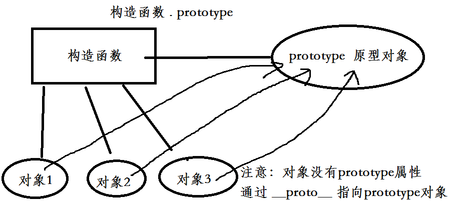

复习：
对象创建几种方法 ： 优缺点
obj = {} new Object()
工厂模式
function create(){
....
return obj;
}
function animal(){
return obj
}
obj = create();
obj2 = animal();
判断某个对象属于哪一个类 : instanceof 用法： 对象 instanceof 构造函数
Object
obj instanceof Object
obj2 instanceof Object
构造函数 ： Animal this
function Animal(){
}
obj = new Animal()
obj instanceof Animal
function Dog(){
}
obj2 = new Dog()
obj3= new Dog()
obj2 instanceof Dog
原型 ：
混合 ：
2、原型
所有的构造函数都有一个原型属性prototype，这个原型属性也叫做原型对象
所有的构造函数new出来的对象都指向原型对象prototype

原型方法、属性 和 普通(实例)方法、属性 区别：
优先级 ： 实例属性和实例方法 优先级高 (css中的style)
复用性 ： 原型方法可以复用 实例方法不可以复用（css中的class 复用 css中的style不能复用 <p style="color:red">）
3、原型链
实例对象和原型之间的链接 就叫做原型链 表示 ： __proto__
原型模式的执行流程 ：
首先在实例中查找 如果实例中没有 就去原型中查找 如果原型中还没有，就去 Object.prototype 查找 如果有 就返回

练习
在 数组Array的原型上实现数组的去重
在 String 的原型上实现 去掉字符串两端的空白字符